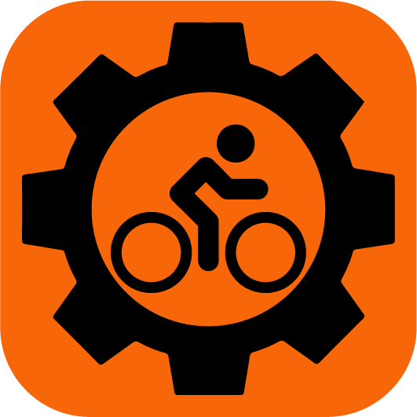
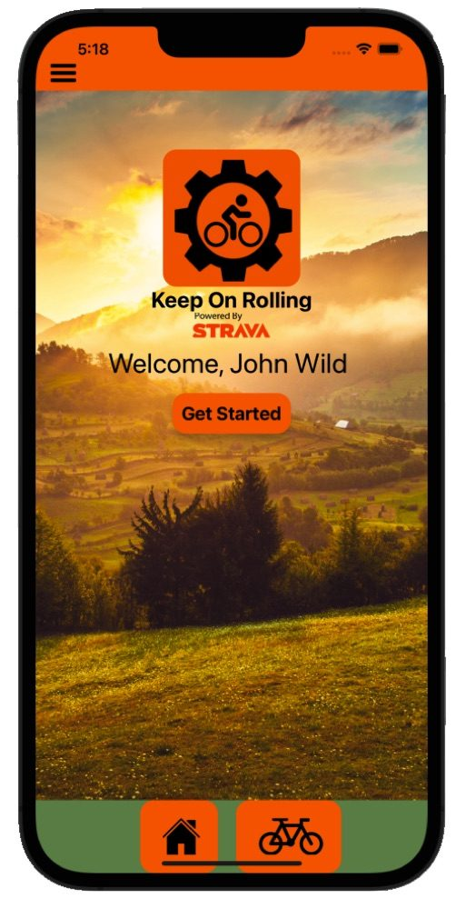

Building apps that make a difference. Currently studying at BYU-Idaho while shipping production software used by real customers.
View My WorkI'm a software developer with a passion for creating applications that make a difference. Currently studying at BYU-Idaho while building production applications used by real customers.
My flagship project, KOR (Keep On Rolling), is a bike maintenance tracking app available on both iOS and Android. It integrates with Strava to automatically track component wear and notify cyclists when maintenance is needed.
When I'm not coding, you'll find me mountain biking, exploring new trails, or working on side projects that solve problems I encounter in daily life.


A bike maintenance tracking app for iOS and Android. KOR integrates with Strava to automatically track component wear based on your rides and notify you when maintenance is due — so you can focus on the trail, not the spreadsheet.